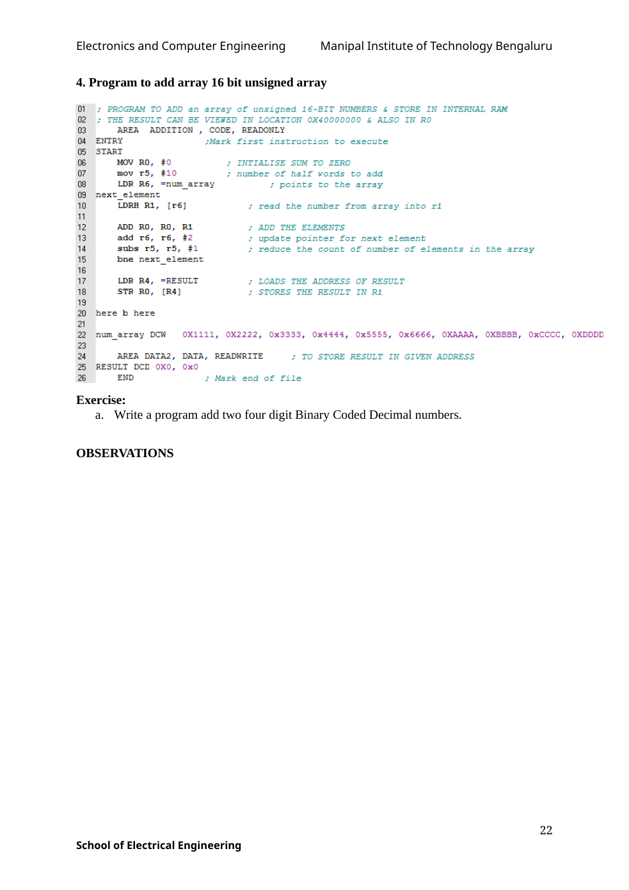

; trial of SUB, SBC, RSB instruction
area Program, CODE, READONLY
ENTRY
Main
LDRB R1, x ; load a byte into r1
LDRH r2, y ; load a word into r2
LDR r4, =Result
sub r3, r1, r2 ; normal subtraction, r3 = r1 = r2
strh r3, [r4] ; store half word result at location pointed by r4
add r4, r4, #4
rsb R3, R1, r2 ; reverse subtract- r2 - r1 = r3
strh r3, [r4] ; store half word result at location pointed by r4
add r4, r4, #4
sbc r3, r1, r2 ; sbc r3 = r1-r2-!Carry
strh r3, [r4] ; store half word result at location pointed by r4
add r4, r4, #4
stop b stop
x DCW -0X0001 ; Value to be tried
y DCW -0X0001 ; Value to be tried
; try with same values of x and y and analyse results
AREA Example1_data, data, READWRITE
ALIGN ;Need to do this because working with a series of 16-bit data
Result DCW 0 ;Storage space
ENDOriginal manual image(s)
